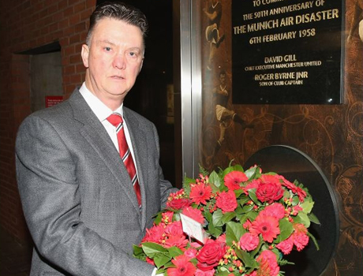
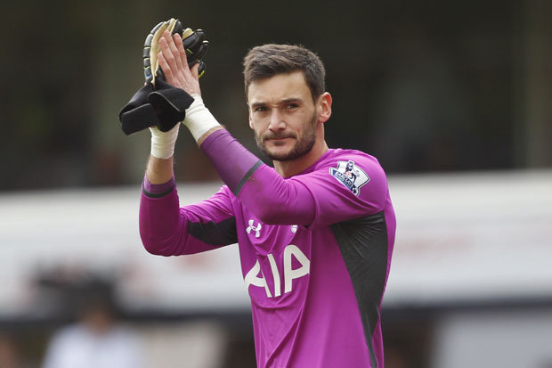
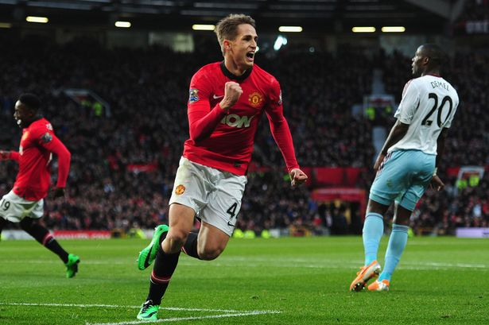

Manchester United Football Club was first formed in 1878, albeit under a different name - Newton Heath LYR (Lancashire and Yorkshire Railway).
Founded as Newton Heath LYR Football Club in 1878, the club changed its name to Manchester United in 1902 and moved to Old Trafford in 1910.
Manchester United have won the most League titles (20) of any English club,a joint record 11 FA Cups, four League Cups, and a record 20 FA Community Shields. The club has also won three European Cups, one UEFA Cup Winners' Cup, one UEFA Super Cup, one Intercontinental Cup, and one FIFA Club World Cup.
Latest News
Premier League: Louis van Gaal marks Munich anniversary

Louis van Gaal has spoken of the importance of history after attending a memorial service to commemorate the 57th anniversary of the Munich air disaster.
Eight United players - members of the club's famous 'Busby Babes' side - were among 23 people killed after a crash at Munich-Riem Airport on February 6, 1958, en route from a European Cup match in Belgrade.
Van Gaal, who laid flowers and sang with the fans at the ceremony, said: "I represent the club nowadays as a manager and my group of players. They were also a group of players who brought a lot of joy to the people at that time.
Manchester United to target Spurs stopper

Hugo Lloris will be the key figure in a summer transfer window in which goalkeepers will take centre stage.
Lloris will be the one Manchester United turn to if David De Gea is prised away by Real Madrid. The Spurs stopper has been on United’s radar since his arrival in the Premier League and is seen as the automatic choice if De Gea succumbs to temptation from the Bernabeu.
De Gea has less than 18 months to run on his United contract and while his agent Jorge Mendes has been making some reassuring noises, he is still being strongly linked to Madrid.
Manchester United's January ins and outs

It was an active January transfer window for Manchester United with three players joining the club and a number leaving, both permanently and on loan.
Our guide below runs through the complete list of the Reds' business in the first part of 2015